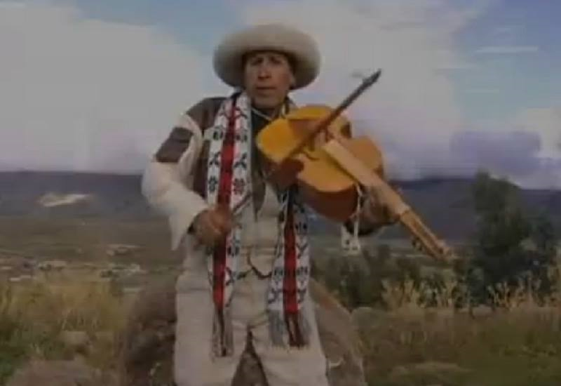

La huaylía de Chumbivilcas
Apunte 026
Inicio > Blog Bitácora de un músico > Apunte 026
La música dentro del ciclo navideño
En la provincia de Chumbivilcas, al sur de Perú, la huaylía (también escrita wayliya) forma parte de una compleja tradición festiva en la que conviven la devoción religiosa, las danzas colectivas, la interpretación musical y las peleas ritualizadas. Su expresión mejor documentada tiene lugar en la localidad de Santo Tomás, donde las celebraciones navideñas, entre el 24 y el 26 de diciembre, reúnen a participantes vinculados a dos imágenes del Niño Jesús: el Niño de Belén y el Niño de Santo Tomás.
Las celebraciones son organizadas por los carguyoq, quienes contratan a músicos y cantoras para acompañar procesiones, reuniones y otras actividades. El 25 de diciembre, la música también acompaña al takanakuy, una forma de enfrentamiento público en la que los participantes se desafían mutuamente, a veces para resolver agravios acumulados durante el año (Cama Ttito & Ttito Tica, 1999).
La relación entre música y combate resulta particularmente reveladora. Sin embargo, la huaylía no es exclusivamente una música para las peleas. Acompaña ceremonias religiosas, desplazamientos colectivos, danzas y celebraciones que se extienden más allá de la Navidad. Por lo tanto, para comprender su organización musical es necesario examinar el contexto ceremonial más amplio, en lugar de considerar el takanakuy como su única finalidad.
Violines, arpa y voces
La formación instrumental tradicionalmente asociada con la huaylía de Chumbivilcas está compuesta por uno o dos violines que llevan la parte melódica y un arpa que proporciona el acompañamiento rítmico. El conjunto también incluye a las cantoras, grupos de mujeres que cantan en un registro vocal agudo y concluyen sus estrofas con estribillos recurrentes, frecuentemente variantes de huaylía hia huaylía huaylía.
La organización melódica es relativamente sencilla y se basa en frases repetidas y un patrón rítmico persistente. Las cantoras y los bailarines pueden reforzar el ritmo mediante una sonaja construida con un armazón de madera en forma de Y, del que cuelgan láminas metálicas. Estos elementos producen una textura musical en la que las cuerdas, las voces y la percusión contribuyen a la continuidad del movimiento colectivo (Ministerio de Cultura, 2016).
La distribución de las funciones musicales es significativa. El violín interpreta las figuras melódicas, pero no organiza por sí solo la ejecución. El arpa, las cantoras, las sonajas y los movimientos de los participantes contribuyen a una práctica musical en la que todos estos elementos se encuentran interrelacionados.
El repertorio también varía según la ocasión. Las letras pueden expresar devoción hacia figuras cristianas, abordar relaciones amorosas o invocar el valor y el honor. Algunas canciones recogidas por Cama Ttito y Ttito Tica alientan explícitamente la confrontación, con referencias a desafíos, adversarios y peligros físicos. Otras pertenecen a contextos devocionales o festivos, sin hacer referencia directa a las peleas.
En consecuencia, la relación entre la música y el takanakuy no puede reducirse al acompañamiento instrumental. El canto participa en la expresión pública de la rivalidad, el aliento a los contendientes y la identidad colectiva. Sin embargo, son los propios participantes y los árbitros designados quienes mantienen las reglas y los límites de cada enfrentamiento, sin que pueda demostrarse que esa función corresponda al tempo o al fraseo musical.
El violín transformado
La presencia del violín en Chumbivilcas forma parte de la larga historia de incorporación de los instrumentos europeos de cuerda a la vida musical andina durante el período colonial y después de él. Los instrumentos introducidos a través de las instituciones y prácticas musicales coloniales adquirieron posteriormente repertorios regionales, técnicas interpretativas y funciones sociales propias.
El Mapa de los instrumentos musicales de uso popular en el Perú, de 1978, documenta una práctica particular de ejecución del violín en Chumbivilcas. Describe el uso de posiciones de los dedos asociadas con la guitarra y señala que los sonidos producidos son predominantemente armónicos, aunque no proporciona información técnica suficiente para establecer con precisión qué significa ese término en la práctica documentada (Instituto Nacional de Cultura, 1978, 147).
El mismo estudio describe violines de mayor tamaño y particularmente resonantes fabricados en Huacaña, Ayacucho, pero no atribuye esas características constructivas a Chumbivilcas. En consecuencia, la documentación disponible no permite determinar si el violín local experimentó modificaciones morfológicas significativas.
Lo que sí puede establecerse es su incorporación a un conjunto regional distintivo, con prácticas melódicas, convenciones vocales, funciones festivas y obligaciones ceremoniales propias. La transformación histórica es, por lo tanto, demostrable en el uso musical y social del instrumento, incluso cuando las posibles modificaciones de su construcción física permanecen sin documentar.
Canto y enfrentamiento
El estudio etnográfico de Cama Ttito y Ttito Tica documenta la estrecha relación entre la huaylía y los enfrentamientos públicos de Santo Tomás. Durante las celebraciones, los participantes, ataviados con trajes especiales y frecuentemente enmascarados, bailan por las calles, visitan viviendas, se reúnen alrededor de sus respectivos carguyoq y finalmente se congregan para las peleas.
Las cantoras acompañan estas actividades y, durante los enfrentamientos, pueden dirigir sus canciones a los participantes, animándolos a aceptar desafíos o demostrar su valentía. De este modo, la música contribuye a crear el ambiente social en el que la rivalidad adquiere visibilidad pública.
Sin embargo, las peleas también dependen de reglas, espacios designados y la intervención de árbitros. El estudio etnográfico registra tanto los intentos de mantener estos límites como episodios en los que los enfrentamientos se intensificaron hasta sobrepasarlos. La ritualización de las peleas no impide necesariamente que la violencia exceda los límites previstos.
La huaylía participa en esta compleja relación entre celebración, confrontación y regulación social, sin ser la única responsable de organizarla o controlarla.
De los conjuntos en vivo a la música grabada
Los cambios en las tecnologías musicales han transformado la interpretación de la huaylía sin eliminar su presencia en las festividades.
Cama Ttito y Ttito Tica ya documentaron el uso de casetes reproducidos mediante equipos electrónicos de sonido durante la década de 1990. Los cambios posteriores incluyeron una presencia creciente de guitarras, mandolinas, acordeones y bajos eléctricos, que en ocasiones desplazaron a la antigua formación de violín y arpa (Ministerio de Cultura, 2016).
Estas transformaciones van más allá de la instrumentación. Las grabaciones comerciales, las actuaciones amplificadas, los videoclips y las celebraciones organizadas por comunidades migrantes han llevado la wayliya a contextos diferentes del ciclo navideño tradicional.
Una investigación reciente de Yonathan Layme Choqque (2026) describe cómo esta expansión ha generado desacuerdos sobre la representación adecuada de la tradición. Tras su reconocimiento como Patrimonio Cultural de la Nación en Perú en 2016, surgieron debates en torno a la autenticidad musical, el repertorio, la regulación institucional y la autoridad para determinar qué formas debían preservarse.
La declaratoria reconoció la wayliya como expresión musical y dancística, excluyendo explícitamente las prácticas que vulneran derechos fundamentales. No constituyó un reconocimiento oficial de los elementos violentos del takanakuy.
Incluso la denominación oficial se convirtió en objeto de controversia. En 2017, el Ministerio de Cultura modificó la denominación patrimonial de Huaylía de Chumbivilcas a Wayliya de Chumbivilcas, en respuesta a una solicitud de la municipalidad provincial.
Por lo tanto, los cambios en la formación instrumental son parte de una transformación más amplia que involucra las tecnologías de grabación, la migración, la circulación comercial y las instituciones culturales.
Un instrumento dentro de una práctica cambiante
La historia de la huaylía en Chumbivilcas ofrece un ejemplo de cómo los instrumentos musicales se integran en prácticas sociales que no pueden explicarse únicamente a partir de sus orígenes europeos o de su clasificación organológica.
El violín se integró en una tradición interpretativa regional cuyas características documentadas incluyen técnicas de ejecución distintivas, determinadas configuraciones de conjunto y funciones musicales asociadas con prácticas ceremoniales colectivas. Su vinculación con las celebraciones navideñas y el takanakuy demuestra cómo un instrumento puede participar simultáneamente en contextos devocionales, festivos y de confrontación.
Sin embargo, la posterior expansión de la wayliya también demuestra que ningún instrumento en particular resulta indispensable para todas las manifestaciones de la tradición. El violín y el arpa siguen siendo importantes referentes históricos, mientras que las grabaciones y las nuevas configuraciones instrumentales continúan transformando la práctica musical.
La continuidad de la wayliya no depende de la preservación de una forma instrumental inalterada. Se sustenta en las relaciones entre el repertorio, los intérpretes, las ocasiones ceremoniales y las comunidades, relaciones que, a su vez, continúan sujetas a transformaciones.
Lecturas
- Cama Ttito, Máximo, y Alejandra Ttito Tica. 1999. "Peleas rituales: la waylía takanakuy en Santo Tomás." Anthropologica 17 (17): 151-185.
- Instituto Nacional de Cultura. 1978. Mapa de los instrumentos musicales de uso popular en el Perú: clasificación y ubicación geográfica. Lima: Oficina de Música y Danza.
- Layme Choqque, Yonathan. 2026. "Takanakuy: racionalización, violencia simbólica y disputas por la legitimidad en los congresos de la wayliya chumbivilcana (Chumbivilcas, Cusco)." Diálogo Andino, 79.
- Ministerio de Cultura del Perú. 2016. Resolución Viceministerial N.º 007-2016-VMPCIC-MC. Declaratoria de la Huaylía de Chumbivilcas como Patrimonio Cultural de la Nación. Diario Oficial El Peruano, Enero 20.
- Ministerio de Cultura del Perú. 2017. Resolución Viceministerial N.º 140-2017-VMPCIC-MC. Modificación de la denominación patrimonial a Wayliya de Chumbivilcas. Agosto 4.